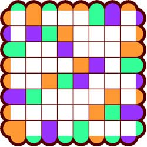
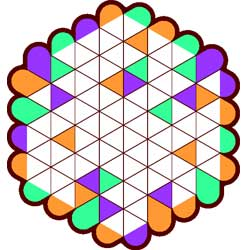
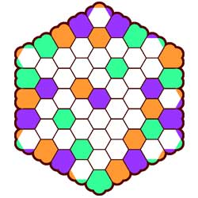
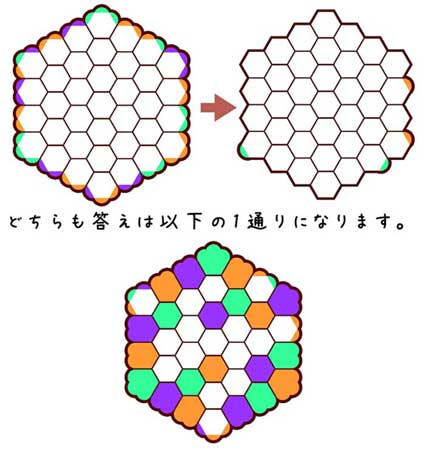
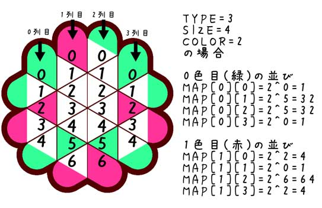

ABCプレースの自動生成プログラムです。
使い方
- ABCPlace makeQuiz(int GAME_TYPE,int GAME_SIZE, int GAME_COLOR)
パネルのタイプ、サイズ、色数を指定して解答が一意なクイズを生成します。
- GAME_TYPE
3,4,6角形のいずれかを指定。
- GAME_SIZE
クイズの横幅を指定。
- GAME_COLOR
一列に並ぶ色の数を指定。
(例)
GAME_TYPE=4,GAME_SIZE=8,GAME_COLOR=3の場合

GAME_TYPE=3,GAME_SIZE=8,GAME_COLOR=3の場合

GAME_TYPE=6,GAME_SIZE=9,GAME_COLOR=3の場合

- boolean makeMoreDifficult()
作成済みのクイズを元に、解答の一意性を損なわないヒントを削り取り、より難易度の高いクイズを作成します。
（既に最難のクイズになっている場合はfalseを返します）

- int isUniqueAnswer()
答えの一意性を確認します。
return 0:解無し , 1:一意の解 , 2:複数解あり
- ABCPlace makeFirstAnswer()
1つ目の答えを取得します（答えが存在しない場合はnull）
- データ形式
- int[][] map
bit配列で解答パターンが出力されます。

- int[][][] hintmap
クイズのヒント部分が出力されます。
ヒントが入らない枠は-1、それ以外はヒントの色番号が入ります。